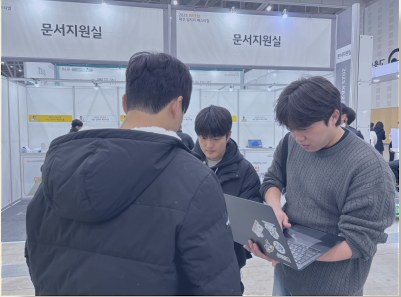
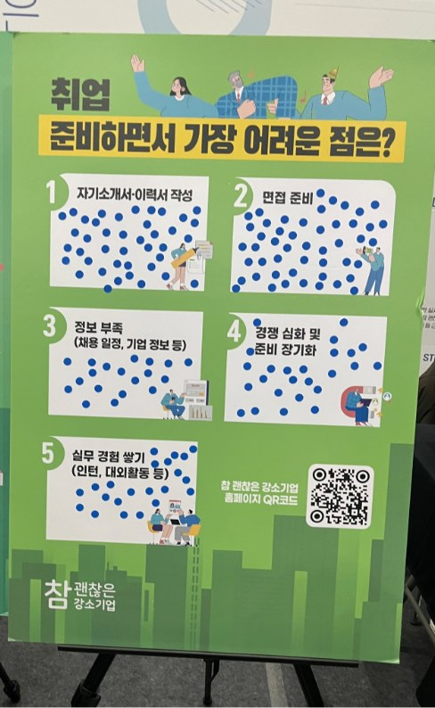
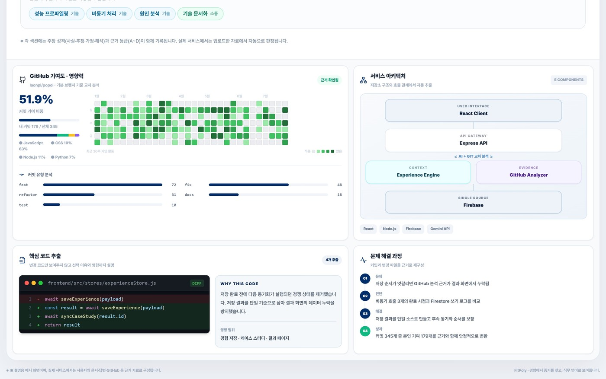
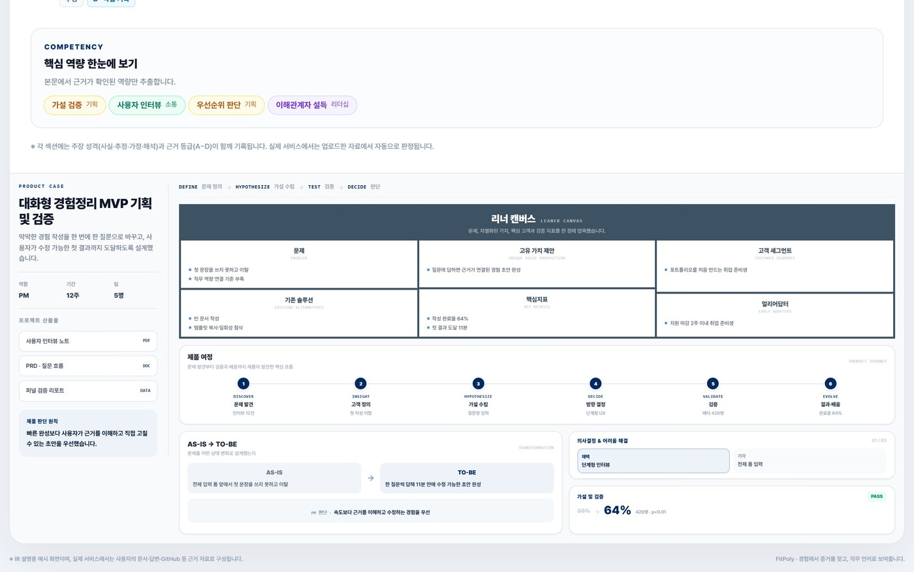
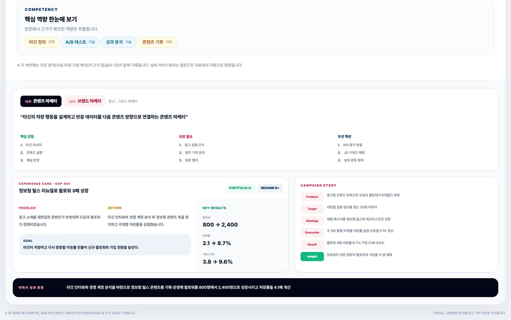
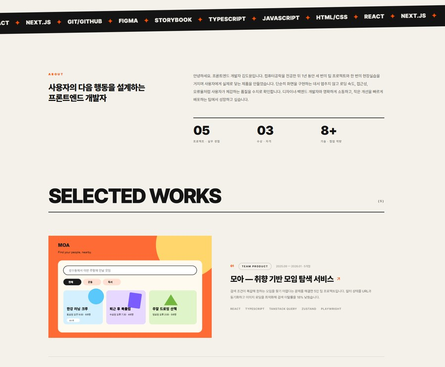
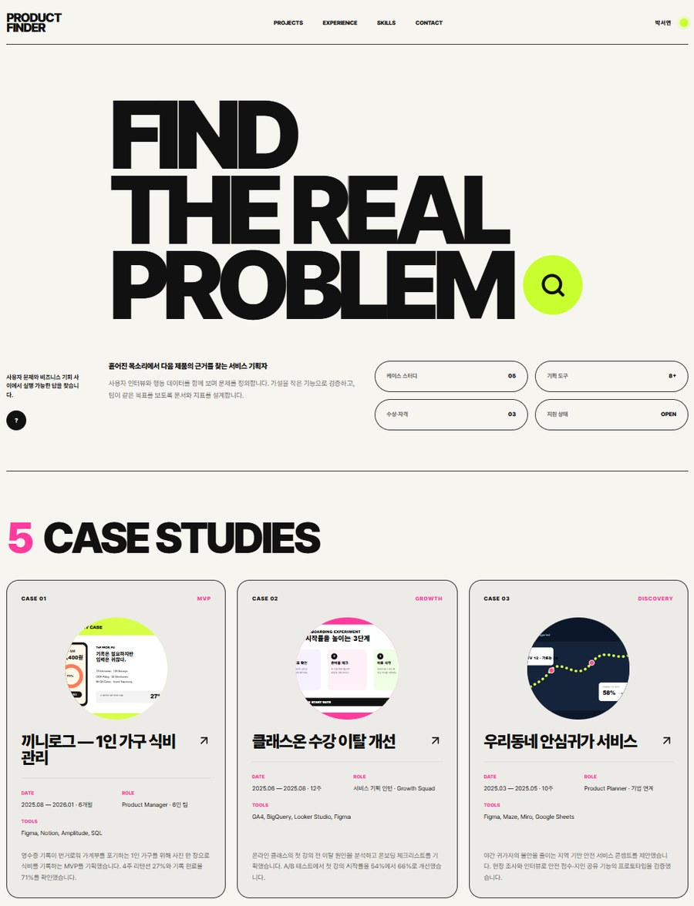
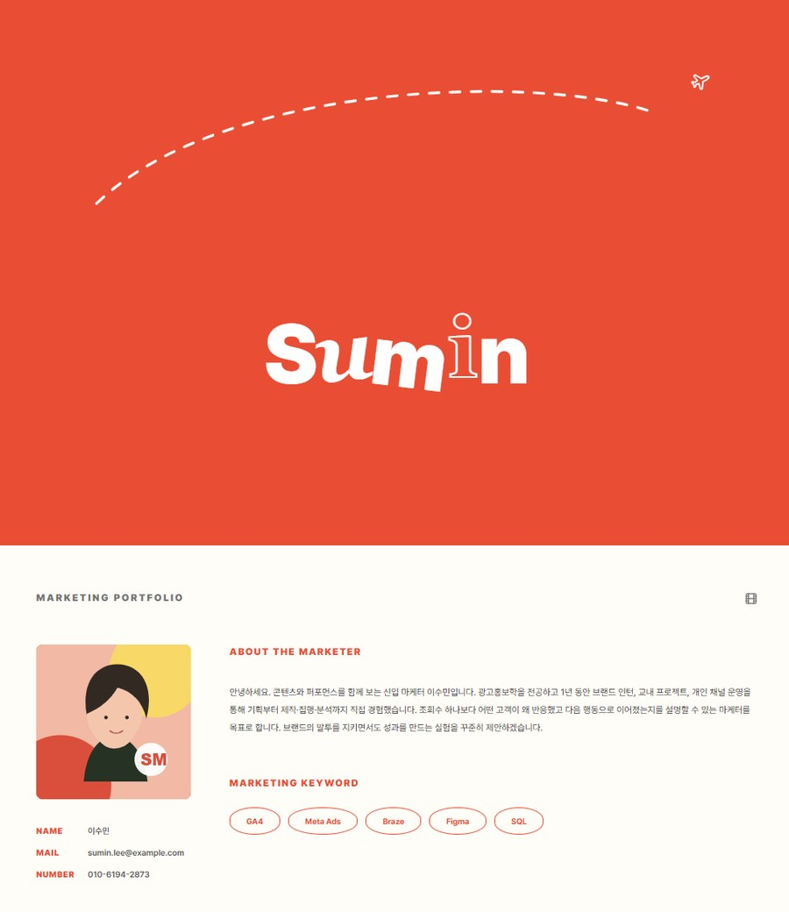

현장 설문 37명과 심층 인터뷰 23명에게 기록 습관, 정리까지 걸리는 시간, 자료가 쌓이는 위치를 여쭈어보았습니다.
경험 정리의 병목
37명 중 23명은 기록을 남겼지만, 그중 80%는 쓸 수 있게 정리하지 못했습니다
Q.
경험을 따로 기록해 두시는 편인가요?
기록해 둡니다
62%
따로 기록하지 않습니다
38%
현장 설문 · 취준생 37명
Q.
기록한 걸 다시 쓸 수 있게 정리까지 하셨나요?
80.2%정리 실패
단순 기록에서 멈춤
의미 있게 정리함 19.8%
기록해 둔 23명 기준
Q.
그 기록은 지금 어디에 쌓여 있나요?
5.4개
한 사람의 기록이 나뉘어 있는 채널 수
3.2시간
경험 하나를 정리하는 데 드는 시간
10곳에 지원하면 32시간이 그대로 반복됩니다
취준생 VS 인사담당자
같은 서류를 두고 무엇이 어긋나 있었을까요?
< 취준생 >
여태까지 해온 것을 하나라도 더 보여주고 싶어 합니다
빠짐없이 담습니다정리해 둔 경험 12개를 하나도 빼지 않고 서류에 넣습니다
중요도는 읽는 쪽에 맡깁니다무엇이 중요한지는 읽는 사람이 골라 주리라 기대합니다
있었던 순서대로 적습니다겪은 일을 시간 순으로 나열하는 데서 멈추는 경우가 80.2%였습니다
< 인사담당자 >
회사에 필요한 경험만 강조된 것을 보고 싶어 합니다
세 개만 읽습니다직무와 맞는 3개만 읽고, 나머지 9개는 오히려 신호를 가린다고 하셨습니다
회사 기준이 먼저입니다회사가 필요로 하는 경험이 맨 위에 보여야 한다고 하셨습니다
판단의 과정을 확인합니다무엇을 겪었고 어떻게 판단했고 무엇이 남았는지를 확인합니다
릴스 하나로 420명이 모였습니다
광고비는 한 푼도 쓰지 않았습니다.
MVP를 만들고 직접 찍은 인스타그램 릴스 1편에서 시작해, 채널을 운영한 첫 한 달 동안 쌓인 숫자입니다.
한 달 동안 남은 것
8.8만 조회에서 420명이 가입했고, 결제 기능이 없던 때에 2명이 먼저 결제하겠다고 하셨습니다
Q.
노출은 어디까지 이어졌을까요?
릴스 조회8.8만
후기까지 더한 누적15만
사이트 가입420명
결제 전환2명
들어온 사람 10명 중 3명이 가입까지 이어졌습니다
Q.
본 사람들은 어떻게 반응했을까요?
공유
1,700
저장
1,600
댓글
550
저장과 공유를 합쳐 3,300건, 남에게 보여줄 만한 콘텐츠로 작동하였습니다
Q.
들어온 다음에는 어땠을까요?
첫 산출물까지 완성
42%
주간 재방문
27.3%
4.8 / 5
사용자 만족도 · 피드백 14건
응답이 14건이라 표본은 작습니다
같은 경험도 직군마다 다르게 읽힙니다
합격 포트폴리오를 모아 직군별 기준을 따로 정리하였습니다. 심사자가 확인하는 5단계는 같고, 채우는 내용만 달라집니다.
관찰
문제가 실재했음을 무엇으로 보이나요
판단
그 문제를 어떻게 해석했나요
대안
무엇을 고르고 무엇을 버렸나요
검증
결과를 무엇으로 확인했나요
잔여
무엇이 남았고 무엇이 달라졌나요
START
END
개발
재현 가능한 증상과 로그
원인 가설을 버린 근거
기술 선택의 trade-off
테스트 · 모니터링 결과 수치
남겨 둔 기술 부채
기획 · PM
사용자에게서 나온 1차 근거
목표와 범위 밖 항목
검토한 대안과 기준
성공 지표와 반증 기준
출시 후 판단의 변화
개발기획 · QA · 웹퍼블리셔처럼 세부 직군까지, 24개 직군마다 인정 기준을 따로 정의하였습니다
PROBLEM
현장에서 직접 확인한 문제입니다
취업박람회에서 취준생 37명을 설문하고 23명을 인터뷰했으며, 4개 직군 인사담당자 8명을 따로 만났습니다.
취준생 — 기록은 하지만 정리까지는 못 합니다
경험을 기록한다
62%
다시 쓸 수 있게 정리한다
19.8%
현장 설문 37명 · 기록해 둔 23명 중 80.2%는 쌓아두는 데서 멈췄습니다
지원할 때마다 그대로 반복되는 시간
32시간
경험 한 건을 정리하는 데 3.2시간, 열 곳에 지원하면 그대로 반복됩니다. 기록은 평균 5.4개 채널에 흩어져 있습니다.
채용 기업 — 읽을 시간이 없습니다
244건공고 1건당 지원서
10초서류 1건 검토 시간
81.6%직무 경험 최우선
조직당 채용담당자는 10.43명 → 4.62명으로 줄었고, 자동 스크리닝을 쓰는 고용주는 90%가 넘습니다
40% 2030년까지 바뀌는 직무 스킬·70% 스킬 기반 채용 기업·11.3개월 첫 취업까지
출처 · 자사 현장 설문 37명 · 심층 인터뷰 23명 · 인사담당자 인터뷰 8명(2026) · WEF Future of Jobs 2025 · NACE Job Outlook 2026 Spring · 통계청 2025.5 청년층 부가조사

취업박람회 현장노트북을 열어 보여드리며 취준생 23명을 인터뷰했습니다

현장 스티커 설문자소서·이력서 작성에 표가 몰렸습니다
인사담당자 인터뷰 8명 · 4개 직군“경험을 데이터로 증명할 수 있는 인재를 우대합니다”
Positioning Map · 시작 조건 × 재사용성
재사용성 높음 · 공고가 바뀌어도 다시 씁니다
재사용성 낮음 · 한 번 쓰고 끝납니다
정리된 결과물 필요
흩어진 원본 그대로
흩어진 원본을 그대로 받아 24개 직군 기준으로 다시 씁니다
한 번은 나오지만 공고가 바뀌면 처음부터 다시 쓰고, 넣지 않은 사실까지 지어냅니다
커리어노트
노트폴리오
노션 템플릿
ChatGPT
FitPoly
205만 명이 해마다 다시 겪는 일입니다
취업준비자 110만 명과 1~3년 차 이직 준비자 95만 명, 연 4만원 결제 기준으로 잡았습니다.
TAM
820억
SAM
360억
SOM
43억
TAM820억
취업준비자 110만 명 + 1~3년 차 이직 준비자 95만 명 = 205만 명. 이직률이 오르며 고객층이 신입에서 주니어까지 넓어지고 있습니다.
SAM360억
포트폴리오가 채용의 필수 서류인 직군으로 좁힌 범위입니다.
SOM43억
3년 안에 닿을 수도권 대학생과 부트캠프 수강생입니다. 대학 취업지원팀·부트캠프는 그대로 4단계 기관 라이선스의 진입로가 됩니다.
75%평균 공헌이익률 · 1C당 AI 원가 0.56원
월 93만원손익분기점 · 월 92건이면 도달, SOM의 0.3% 수준
0원지금까지 집행한 광고비 · 획득 비용은 0에 가깝습니다
지금은 1단계, 결제 전환을 확인하고 있습니다
B2C에서 쌓은 사용 데이터가 그대로 B2B 분석과 기관 라이선스의 재료가 됩니다.
STEP 01
결제 전환 검증
무료 크레딧을 다 쓴 뒤 실제 충전으로 이어지는지 확인합니다. 이미 추가 결제 2건이 나왔고, 지금은 리뷰를 조건으로 크레딧을 더 드리며 사용성을 고치고 있습니다.
무료 크레딧 소진율 50%
충전 진입률 25%
가격 수용도 60%
STEP 02
직군 집중
반응과 결제율이 높은 직군부터 콘텐츠와 기능 개발을 몰아 줍니다.
직군별 결제율 비교
24개 직군 → 우선 직군
콘텐츠 · 기능 우선순위
STEP 03
영역 확장과 데이터 판매
포트폴리오에서 자소서와 면접까지 넓히고, 동의를 받은 데이터만 익명화해 직군·연차별 통계로 제공합니다.
자소서 · 면접으로 확장
기업 공고 요구 역량 조정
대학 · 부트캠프 교육과정
STEP 04
기관 라이선스
대학 취업지원팀과 부트캠프에 라이선스를 판매해 반복 매출을 확보합니다.
대학 취업지원팀
부트캠프
기관 단위 반복 매출
B2B 레퍼런스
H대기업에 인사관리 시스템을 납품하며 요구사항 조율부터 검수와 최종 납품까지 B2B 전 과정을 거쳤습니다. 신뢰를 계획서가 아니라 납품 이력으로 증명합니다.
하나의 자산
B2C에서 쌓인 직군별 경험 데이터가 그대로 B2B 분석과 기관 라이선스의 재료가 됩니다. 두 사업이 같은 자산을 나눠 쓰는 구조입니다.
OUTPUT
한 번 정리한 경험이 두 가지 산출물로 나옵니다
직군이 바뀌면 페이지에 들어가는 섹션과 시각화 자체가 달라집니다. 아래 화면은 모두 서비스가 실제로 렌더한 결과입니다.
1경험정리 결과직군 기준으로 재구성된 전체 페이지 — 같은 파이프라인, 다른 섹션
개발자경험 구조화·검증 파이프라인 개발

GitHub 기여도 51.9% · 코드 변경 · 서비스 아키텍처
기획 · PM대화형 경험정리 MVP 기획 및 검증

린 캔버스 · 가설 검증 · 전환 64% / 첫 결과 11분
마케터취업 준비생 타깃 콘텐츠 캠페인 운영

캠페인 스토리 · CVR 8.7% · 신규 가입 510명
2완성 포트폴리오PDF와 공개 링크로 바로 제출 — 직군마다 템플릿까지 다릅니다
fitpoly.kr/p/kimdoyun

김도윤 · 프론트엔드 개발자
fitpoly.kr/p/parkseoyeon

박서연 · 서비스 기획자
fitpoly.kr/p/leesumin

이수민 · 마케터
세 사람 모두 같은 파이프라인을 거쳤습니다 · 링크는 본인이 켜고 끌 수 있고, 끄면 즉시 열람이 차단됩니다 · 사이트에서 /example1 · /example2 · /example3 으로 전체를 볼 수 있습니다